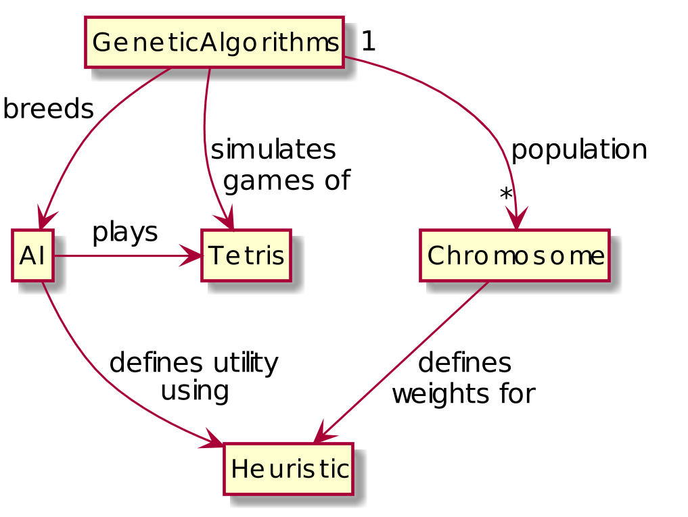
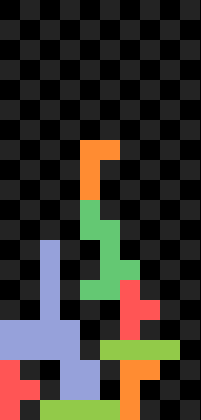

Tetris AI Documentation
Introduction
It is hard to determine how to create a Tetris AI, as I don't have any idea how to play the game well myself, and every move is highly situationally dependent. A rule-based script would be a complete dead end. My strategy is simply to try every combination of the current piece on the game board and use the one that produces the highest utility. The utility would be calculated by combining some weighted heuristics. The heuristics would include things such as stacking blocks too high, -40 utility; left a gap in blocks, -20 utility; cleared a row, +50 utility.
I suck at Tetris, and am probably going to end up weighting all the heuristics badly, or worse, creating heuristics that predict failure instead of success, or simply nothing useful at all. Here comes the interesting part. I've been doing some research on genetic algorithms, and believe that breeding an AI with effective weights for its heuristics is a good application of them. Effectively, a population of utility-based agents would begin with random weights in their utility functions, and through a fitness function assessing how long each agent survives games of Tetris, an effective agent with a good utility function would be bred.
Domain model
A chromosome is simply a set of heuristics and their weights. A genetic algorithms class will generate many random chromosomes to create an initial population, and simulate many games of Tetris by swapping new chromosomes into the AI. Using the final score as a "fitness function", the genetic algorithm can determine which chromosomes were the most successful and create new chromosomes based off those chromosomes. After many generations we should have a population of chromosomes that are very good at playing Tetris as that is what they've been bred for. 
Heuristics
I have defined six heuristics which will estimate the utility of a given Tetris board, which are described under Definitions. As these are easier to explain in a visual form, the more complex heuristics are also shown in an image format under Diagram and Unit Tests. How the heuristics are combined is up to the genetic algorithm.
Definitions
- Number of blocks: The number of blocks on the board. A block is defined as any non-empty cell.
- Max height: Height of the highest block on the board.
- Average height: Average height of all of the blocks on the board.
- Number of holes: A hole is defined as an empty cell with a block above it. The block does not have to be in the cell directly above the hole for it to count.
- Number of blocks above holes: Number of blocks that are placed above holes. Like when defining holes, the block doesn't have be directly above the hole, so for example a stack of three blocks on top of a single hole will give a result of 3.
- Number of gaps: A gap is defined as an empty cell with a block directly to its left and right. This was added after testing showed many bots were building large towers with a single column in between, waiting for the magical I-beam piece. For the purposes of this heuristic, the edge of the board is considered to be a block.
Diagram
Unit Tests
Another thing that might be useful to look at to understand the heuristics is their unit tests.
Each of the below tests are conducted on the following board:

def test_num_holes(self):
self.assertEqual(num_holes(self.board), 22)
def test_num_blocks_above_holes(self):
self.assertEqual(num_blocks_above_holes(self.board), 25)
def test_num_gaps(self):
self.assertEqual(num_gaps(self.board), 7)
def test_max_height(self):
self.assertEqual(max_height(self.board), 13)
def test_avg_height(self):
total_height = ( 13*2 + 12*1 + 11*1 + 10*1 + 9*2 + 8*2 + 7*3 + 6*4 + 5*3 + 4*5 + 3*8 + 2*5 + 1*5 + 0*6 )
self.assertEqual(avg_height(self.board), total_height / num_blocks(self.board))
def test_num_blocks(self):
self.assertEqual(num_blocks(self.board), 48)You can run the unit tests using the following command:
>>> python -m unittest -v heuristic_tests.py
test_avg_height (heuristic_tests.TestHeuristics) ... ok
test_max_height (heuristic_tests.TestHeuristics) ... ok
test_num_blocks (heuristic_tests.TestHeuristics) ... ok
test_num_blocks_above_holes (heuristic_tests.TestHeuristics) ... ok
test_num_gaps (heuristic_tests.TestHeuristics) ... ok
test_num_holes (heuristic_tests.TestHeuristics) ... ok
----------------------------------------------------------------------
Ran 6 tests in 0.001s
OKGenetic Algorithms
The genetic algorithms decide how important each heuristic is, and whether each measures a positive or negative aspect of the board. The way the heuristics are defined, it would seem that all the heuristics measure negative aspects of the board, or ones where a higher value indicates a worse board. This was the intention, although the most successful chromosomes do not weight them this way. There is no reason to believe that the result a genetic algorithm will evolve will think about the problem in a similar way to how a human would.
Chromosomes
Each "chromosome" is a dictionary of heuristics and their weights.
{
heuristic.num_holes: -496,
heuristic.num_blocks_above_holes: 897,
heuristic.num_gaps: -19,
heuristic.max_height: -910,
heuristic.avg_height: -747,
heuristic.num_blocks: 174,
}The AI multiplies each of its heuristics by their respective weight to come up with a utility value. As the chromosome defines these weights, it dictates how the AI plays.
def utility(self, board):
return sum([fun(board)*weight for (fun, weight) in self.heuristics.items()])Algorithm
The genetic algorithm starts by creating a population of random chromosomes.
def __init__(self):
self.population = [self.random_chromosome() for _ in range(POPULATION_SIZE)]
def random_chromosome(self):
return Chromosome({fun: randrange(-1000, 1000) for fun, weight in self.ai.heuristics.items()})The size of the population heavily influences the performance of the program. Populations that are too small won't cover as much of the search space, and are more likely to get stuck in local minimums. It is important to tune the population size per problem because having a population that is too big is of no benefit, and greatly increases the training time the program requires.
How much each chromosome can influence the direction of the search is based on how long they survive, and how many offspring they produce. How likely each chromosome is to survive and breed is based on their fitness. Luckily, Tetris is an example of a problem where the fitness function is trivial to implement. In this case, I've decided to make the fitness of a chromosome the average score it achieves in a Tetris game. I'm using the average score because my testing has shown that there is a lot of luck involved in Tetris; luck is not hereditary, and is therefore useless to a genetic algorithm.
Selection
Selection is the process that decides which chromosomes live and die. Currently the program will always allow SURVIVORS_PER_GENERATION chromosomes to make it to the next generation. How these chromosomes are chosen depends on the selection method. Some common selection methods from most likely to keep high performing chromosomes to most likely to consider alternative solutions and break out of local maximums are:
- Elitism: Select most fit chromosomes.
- Roulette wheel: Select chromosomes randomly in proportion to fitness.
- Rank selection: Rank chromosomes by fitness, select randomly in proportion to rank.
Currently only roulette wheel selection is implemented.
def selection(self, num_selected, method):
def roulette(population):
total_fitness = sum([c.avg_fitness() for c in population])
winner = randrange(int(total_fitness))
fitness_so_far = 0
for chromosome in population:
fitness_so_far += chromosome.avg_fitness()
if fitness_so_far > winner:
return chromosome
if method == SelectionMethod.roulette:
survivors = []
for _ in range(num_selected):
survivors.append(roulette([c for c in self.population if c not in survivors]))
return survivors
raise ValueError('SelectionMethod %s not implemented' % method)Crossover
Crossover is the process where new chromosomes inherit traits from their parent chromosomes. This program will always create NEWBORNS_PER_GENERATION chromosomes each generation, but in general the crossover probability is discussed, which is effectively NEWBORNS / POPULATION_SIZE. A higher crossover probability reduces the likelihood of maintaining good chromosomes, while a lower value makes improvement slow.
This program currently defines two crossover methods:
- Random attributes: Randomly take all required attributes from either parent.
- Average attributes: Average each of the attributes of each parent.
def crossover(self, c1, c2, method):
def random_attributes():
heuristics = {}
for fun, _ in c1.heuristics.items():
heuristics[fun] = random.choice((c1, c2)).heuristics[fun]
return Chromosome(heuristics)
def average_attributes():
heuristics = {}
for fun, _ in c1.heuristics.items():
heuristics[fun] = (c1.heuristics[fun] + c2.heuristics[fun]) / 2
return Chromosome(heuristics)
if method == CrossoverMethod.random_attributes:
return random_attributes()
if method == CrossoverMethod.average_attributes:
return average_attributes()
raise ValueError('CrossoverMethod %s not implemented' % method)Mutation
Mutation is a glitch that results in different values being assigned to a chromosome than the crossover algorithm would usually define. This program defines mutation fairly typically, there is a mutation probability that defines how often parts of a chromosome will be mutated. When mutation occurs, a random value is assigned to an attribute instead of the value defined by the crossover algorithm.
Mutation is necessary to avoid having the population all converge on one result and become homogeneous, as crossover makes all the chromosomes more similar each generation. Higher mutation probabilities can result in poor improvement as search becomes more random, whereas lower values can result in falling into local maximums too easily or producing the aforementioned convergence problem.
def mutation(self, chromosome, mutation_rate):
if randint(0, int(mutation_rate)) == 0:
h = chromosome.heuristics
h[random.choice(list(h.keys()))] = randrange(-1000, 1000)Combining Selection, Crossover and Mutation
Now that we can randomly generate chromosomes to create the initial population, and we have algorithms for selection based on fitness and crossover to create a child that inherits traits from its parents, we have all of the conditions required for evolution to occur. The mutation algorithm isn't strictly required for evolution, but significantly improves the performance of the population by avoiding early convergence or fixation on local maximums. The following code is a simplified version of what's contained in the actual program; it aims to communicate how we can combine all of the algorithms to produce the next generation of a given population.
def next_generation(self):
survivors = self.selection(SURVIVORS_PER_GENERATION, SELECTION_METHOD)
children = []
for _ in range(NEWBORNS_PER_GENERATION):
parents = self.selection(2, SELECTION_METHOD)
children.append(self.crossover(parents[0], parents[1], CROSSOVER_METHOD))
new_population = survivors + children
for _ in range(MUTATION_PASSES):
for chromosome in new_population:
self.mutation(chromosome, MUTATION_RATE / MUTATION_PASSES)
assert len(new_population) == len(self.population)
self.population = new_populationNow all we have to do is make each chromosome play GAMES_TO_AVG games of tetris to evaluate their fitness each generation.
def on_game_over(self, score):
chromosome = self.population[self.current_chromosome]
chromosome.games += 1
chromosome.total_fitness += score
if chromosome.games % GAMES_TO_AVG == 0:
self.next_ai()
self.app.start_game()
def next_ai(self):
self.current_chromosome += 1
if self.current_chromosome >= POPULATION_SIZE:
self.current_chromosome = 0
self.next_generation()
self.ai.heuristics = self.population[self.current_chromosome].heuristicsConclusion
The genetic algorithm improved significantly over my hand-tuned heuristic weights. Never being satisfied, I expected to get better results by tweaking the parameters as well as methods of selection and crossover of the genetic algorithms, but I couldn't achieve anything significantly better than the initial results.
Perhaps it is worth looking into another stochastic optimisation algorithm, such as simulated annealing, hill climbing with restarts or Tabu search.